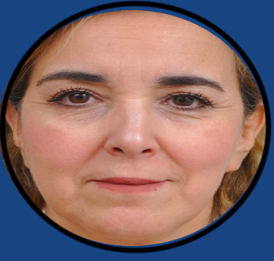
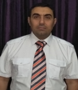
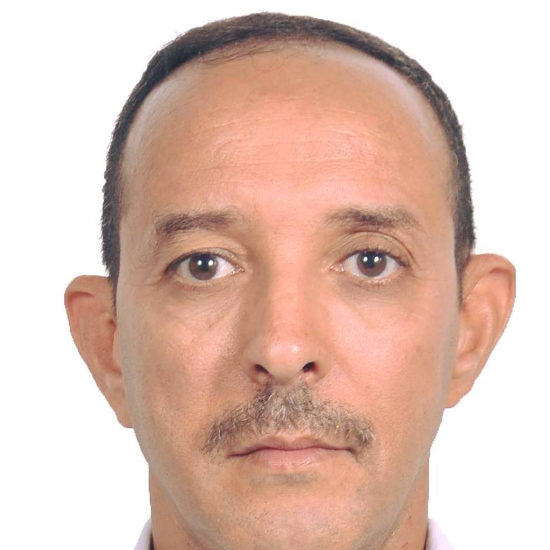

Nos Équipes de Recherche
Le laboratoire LINFI regroupe 5 équipes thématiques spécialisées en informatique intelligente

Équipe IADAW
L’équipe IADAW (Intelligence Artificielle Distribuée et Applications Web) traite des problématiques avancées relatives à l'intelligence artificielle distribuée, aux environnements de cloud computing, aux architectures e-learning/m-learning sémantiques, à la cybersécurité des systèmes d'informations complexes ainsi qu'au paradigme agent mobile.
En savoir plus
Équipe CoViBio
L’équipe CoViBio (Computer Vision and Biological Cybernetics) concentre ses recherches sur les architectures intelligentes pervasives. Elle allie cloud computing, cloud robotics, maintenance prévisionnelle (PHM), Internet des objets (IoT), vision artificielle et techniques d'apprentissage automatique (Machine Learning) pour des applications concrètes en agro-industrie, transport et santé.
En savoir plus
Équipe GLSIA
L’équipe GLSIA (Génie Logiciel et Systèmes Informatiques Avancés) focalise ses efforts de recherche sur la spécification et la vérification formelle des systèmes distribués, le développement de langages et de nouveaux formalismes, la composition automatique des services Web sémantiques sensibles aux contextes ainsi que les infrastructures pour l'Internet des objets (IoT).
En savoir plus
Équipe SIGTI
L’équipe SIGTI (Systèmes d'Information Géographique et Technologies de l'Information) propose des solutions algorithmiques pour optimiser l'exploitation des services Web géographiques, le commerce mobile et les systèmes embarqués en temps réel. Leurs travaux couvrent la technologie multi-agents et le traitement automatique du langage naturel (TALN).
En savoir plusÉquipe SCID
L'équipe SCID (Systèmes Connectés Intelligents et Digitaux) innove dans la conception de solutions numériques avancées pour la numérisation durable. Ses travaux couvrent les services géolocalisés sécurisés, la détection automatique d'anomalies en vidéosurveillance intelligente via l'IA, les systèmes multi-agents distribués et le développement de drones et robots camouflés solaires autonomes.
En savoir plus